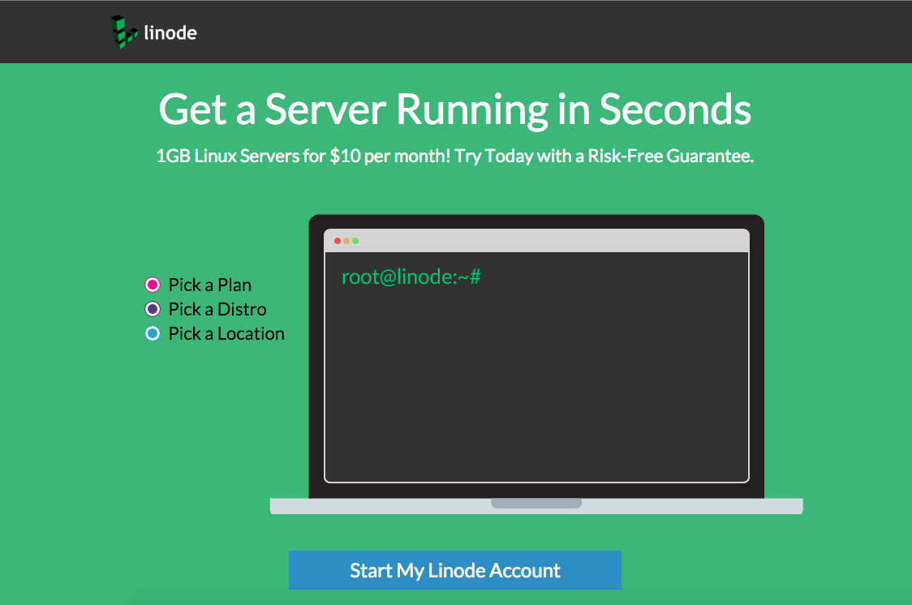

Web application Deployment
G.
Deployment
web hosting
Servidor: Hardware fisico
Servidor virtual privado: renta en un servidor compartido.
Linode
,
Digital Ocean.
Servicios en la nube: infraestructura como servicio. (IaaS)
Amazon Web Services
Servicios en la nube: plataforma como servicio. (PaaS)
Heroku
,
Google App Engine
,
Python Anywhere

Sistema operativo
Infraestructura
Servidor Web:
Nginx
,
Apache
Balanceador de Carga:
HAProxy
,
Pound
,
Squid
servidor de Cacheo Web:
Varnish
,
Memcache
Monitoreo
webpagetest
Munin
Supervisor
ZABBIX